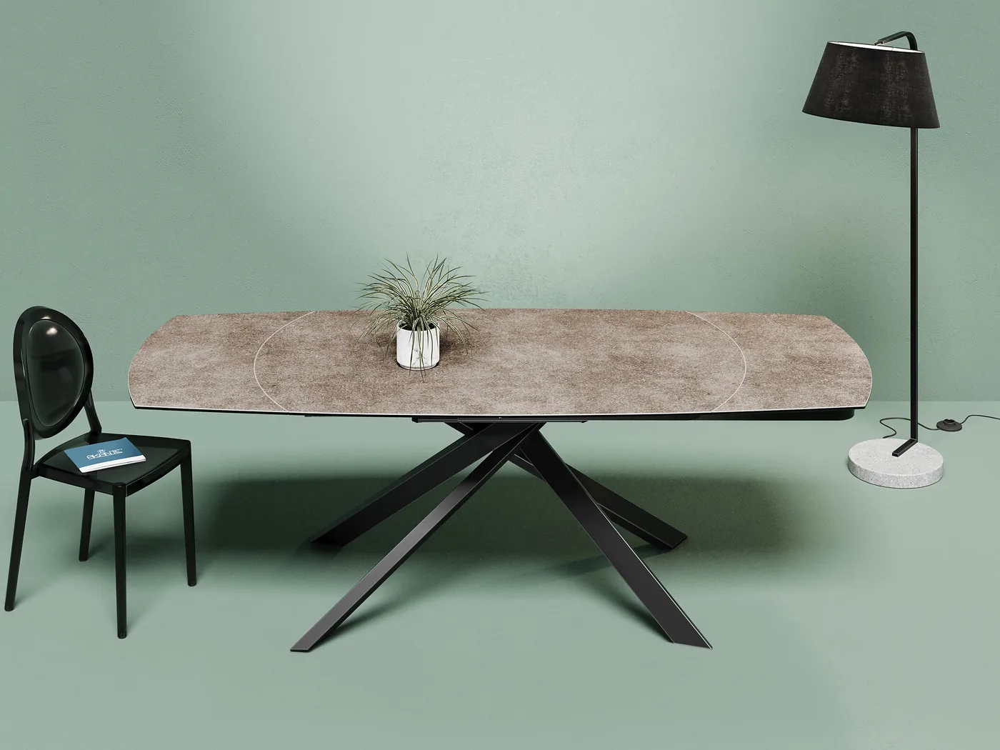
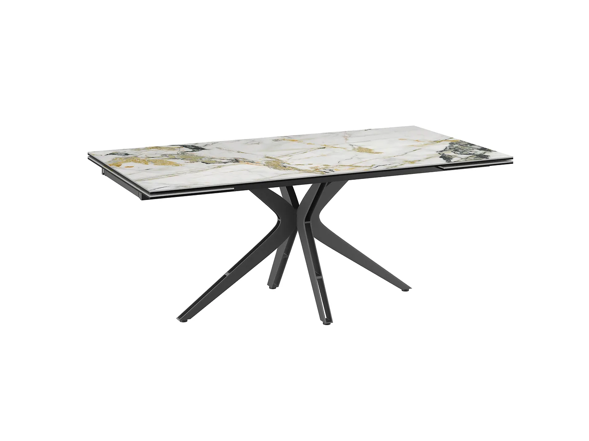
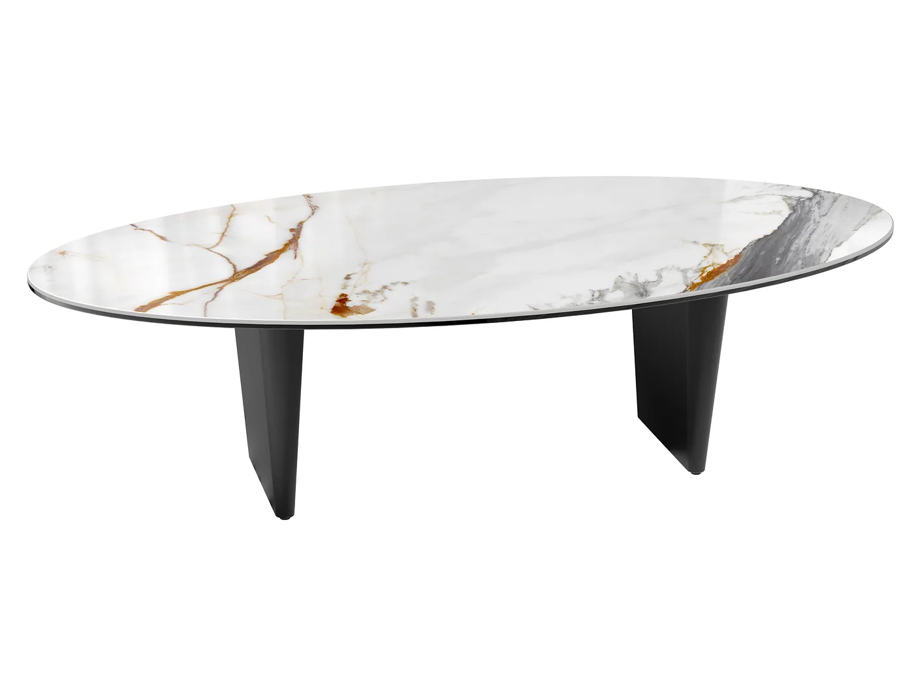
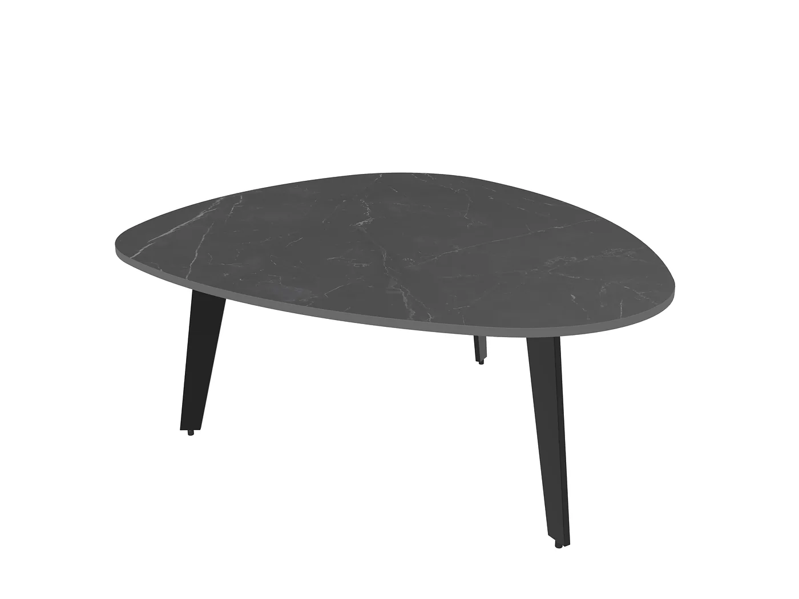
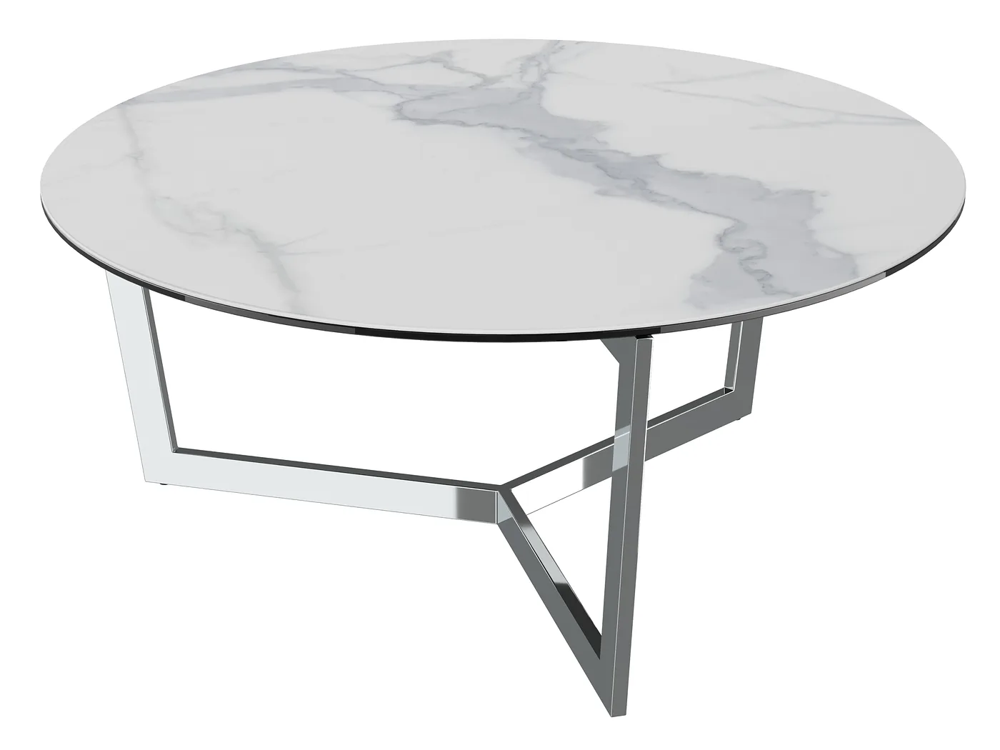
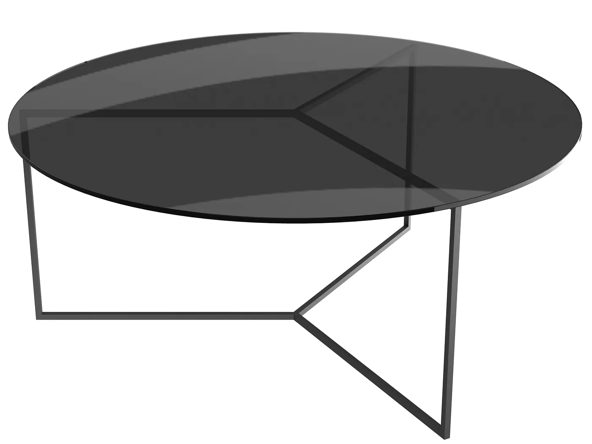

Rallonge intégrée, plateau en céramique
Tables Akante
Rallonge centrale, latérales synchronisées ou indépendantes : choisissez la table selon votre espace et le nombre de convives.
- Tables à rallonge
- Plateaux en céramique
- Première visite et conseil offerts
La collection
Les tables Akante.
-
 01
01Phoenix
Plateau en céramique aux bords arrondis, pied central en étoile et rallonge au centre : 160 ou 200 cm fermée, 210 ou 260 cm ouverte.
Dimensions et versions de Phoenix -

02Kheops
Deux rallonges latérales qui sortent ensemble : 120, 130 ou 160 cm fermée, 180, 190 ou 240 cm ouverte.
Dimensions et versions de Kheops -
 03
03Milazzo
Format compact avec deux rallonges sous le plateau : 120 ou 130 cm fermée, 180 ou 190 cm ouverte.
Dimensions et versions de Milazzo -
 04
04Missouri
Céramique marbrée : 150 ou 190 cm fermée, 230 ou 270 cm ouverte, jusqu’à dix ou douze convives.
Dimensions et versions de Missouri -
 05
05Austin
Oblongue fermée, ronde ouverte : 135 × 95 cm, puis un cercle de 135 cm. Les deux autres versions mesurent 150 × 100 et 190 × 115 cm fermées et forment des cercles de 150 et 190 cm une fois ouvertes.
Dimensions et versions d’Austin -
 06
06Ontario
Rectangulaire à deux rallonges indépendantes : elle passe de 150 à 230 cm, de 190 à 270 cm, ou de 200 à 300 cm en Grande Ontario.
Dimensions et versions d’Ontario -

07Influence
Plateau rectangulaire, pied central noir (ou taupe avec les finitions Marbre mat et Argile) et deux rallonges indépendantes : 150 ou 190 cm fermée, 230 ou 270 cm ouverte.
Dimensions et versions d’Influence -
 08
08Vancouver
Bords arrondis, pied central à branches et rallonge centrale automatique : 160 ou 200 cm fermée, 210 ou 260 cm ouverte.
Dimensions et versions de Vancouver


Avec nous, au magasin
Choisir sa table Akante.
Fony Meubles est revendeur Akante. Votre table se choisit avec nous, au magasin de Leval-Trahegnies, près de Binche, de la première visite à la livraison.
-
Le conseil
La première visite et le conseil sont offerts, avec ou sans rendez-vous. Notre équipe part de votre pièce et du nombre de convives pour vous orienter vers un modèle.
-
Les dimensions
Apportez les dimensions de votre pièce et, si vous le pouvez, quelques photos. Une table à rallonge se compare fermée, puis ouverte : notre page sur les tables extensibles en céramique présente les modèles par mécanisme de rallonge. Pour le nombre de places, voyez notre guide Quelle taille de table ?
-
Le plateau
La finition du plateau en céramique se choisit avec nous. Pour accorder une pierre veinée à votre sol et à votre lumière, nos repères sont dans les tendances.
-
Le prix
Pour le prix, venez nous rendre visite au magasin : le choix est large, et nous vous donnons le prix du modèle qui vous intéresse. Vous pouvez aussi nous appeler au 064 46 07 72.
-
La commande et la livraison
Une fois le modèle retenu, la table se commande dans les dimensions et la finition choisies. Nous la livrons et l’installons nous-mêmes.
Vous préférez composer la forme, le plateau et le pied de votre table ? Les tables Perfecta se composent ainsi, avec leurs chaises assorties.
Devant le canapé
Les tables basses Akante.
En céramique ou en verre, pour accompagner le canapé.
-

Goliath
Plateau ovale en céramique, 140 × 70 cm, hauteur 38 cm.
-

Galet
Plateau en céramique en forme de galet, 92 × 76 cm, hauteur 33 cm.
-

Tamara
Ronde, plateau en céramique de 90 cm, structure en acier poli.
-

Venezia
Ronde, plateau en verre trempé fumé de 90 cm, piétement en acier noir.
Voir aussi
Les autres tables.
-
Cattelan Italia
Des tables en céramique au design affirmé.
Voir les tables Cattelan -
Sedit
Céramique ou bois, fabriquées en Italie.
Voir les tables Sedit -
Perfecta
Des tables à composer, avec leurs chaises.
Voir les tables Perfecta -
Toutes nos tables
Et les chaises qui vont avec.
Voir la salle à manger
Dans nos réalisations
-
Séjour
Goliath · Le fil d’un séjour lumineux
Une table Goliath d’Akante, des meubles Tomasella, puis une console. Le récit d’un séjour aménagé en deux temps avec FONY.
Venez voir nos tables au magasin.
Au magasin, essayez les mécanismes des tables exposées : c’est la meilleure façon de choisir.
Partager cette page
- Lundi
- 13h30 – 18h30
- Mardi au samedi
- 10h30 – 18h30
- Dimanche
- Fermé
- Téléphone
- 064 46 07 72
- Livraison
- Par nos soins, dans le Hainaut (Binche, La Louvière, Mons, Charleroi…) et la province de Namur
Nous livrons aussi dans le nord de la France. Ailleurs, dont Bruxelles : sur demande.